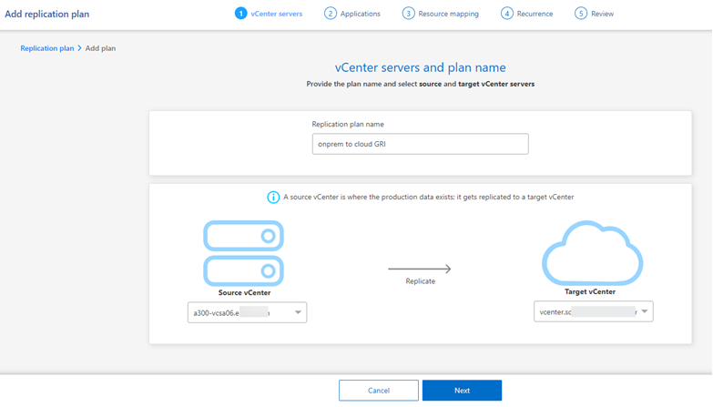
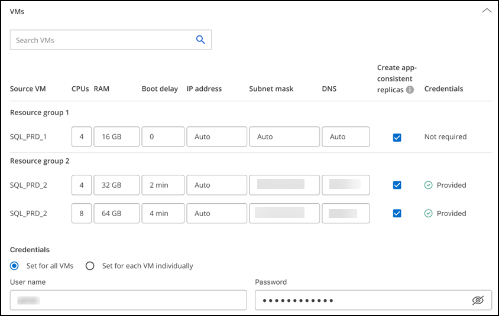
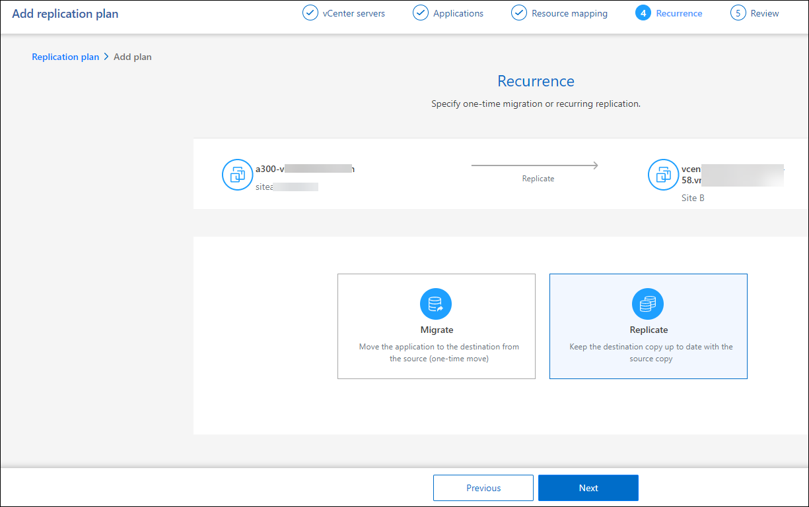
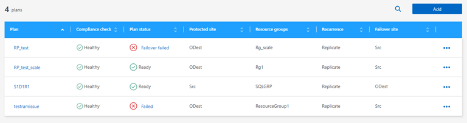

릴리스 정보
릴리스 정보
복제 계획을 생성합니다
 변경 제안
변경 제안
vCenter 사이트를 추가한 후에는 재해 복구 또는 _replication plan_을 생성할 수 있습니다. 소스 및 대상 vCenter를 선택하고 리소스 그룹을 선택한 다음 애플리케이션을 복구하고 전원을 켜는 방법을 그룹화합니다. 예를 들어, 하나의 애플리케이션에 연결된 가상 머신을 그룹화하거나 계층이 유사한 애플리케이션을 그룹화할 수 있습니다.
이러한 계획은 _bluetprints_라고도 합니다.
복제 계획을 생성하고 규정 준수 및 테스트를 위한 일정을 편집할 수도 있습니다.
계획을 작성합니다
마법사는 다음 단계를 안내합니다.
-
vCenter Server 를 선택합니다
-
복제할 VM을 선택하고 그룹을 할당합니다
-
소스 환경의 리소스가 대상에 매핑되는 방식을 매핑합니다.
-
재발 파악
-
계획을 검토합니다
복제 계획을 생성하는 동안 다음 구성 중 하나에서 소스 볼륨과 타겟 볼륨 간의 SnapMirror 관계를 정의할 수 있습니다.
-
1 대 1
-
팬아웃 아키텍처에 1개 또는 다대다
-
정합성 보장 그룹에서 다대일 수
-
다대다
이 서비스에서 SnapMirror 관계를 생성하려면 클러스터와 SVM 피어링을 BlueXP 재해 복구 외부에서 이미 설정한 상태여야 합니다.
vCenter Server 를 선택합니다
먼저 소스 vCenter를 선택한 다음 대상 vCenter를 선택합니다.
-
BlueXP 왼쪽 NAV에서 * Protection * > * Disaster Recovery * 를 선택합니다.
-
BlueXP 재해 복구 상단 메뉴에서 * Replication plans * 를 선택합니다. 또는 서비스를 사용하기 시작한 경우 대시보드에서 * 복제 계획 추가 * 를 선택합니다.

-
복제 계획의 이름을 생성합니다.
-
소스 및 타겟 vCenter 목록에서 소스 및 타겟 vCenter를 선택합니다.
-
다음 * 을 선택합니다.
리소스 그룹을 복제하고 할당할 애플리케이션을 선택합니다
다음 단계는 필요한 가상 머신을 기능적 리소스 그룹으로 그룹화하는 것입니다. 리소스 그룹을 사용하면 종속 가상 머신 세트를 요구 사항을 충족하는 논리적 그룹으로 그룹화할 수 있습니다. 예를 들어, 복구 시 실행할 수 있는 지연된 부팅 순서가 그룹에 포함될 수 있습니다.

|
각 리소스 그룹에는 하나 이상의 가상 머신이 포함될 수 있습니다. 여기에 가상 시스템을 포함하는 순서에 따라 가상 시스템의 전원이 켜집니다. |
-
애플리케이션 페이지의 왼쪽에서 복제하고 선택한 그룹에 할당할 가상 머신을 선택합니다.
선택한 가상 머신이 그룹 1에 자동으로 추가되고 새 그룹 2가 시작됩니다. 마지막 그룹에 가상 머신을 추가할 때마다 다른 그룹이 추가됩니다.

-
필요에 따라 다음 중 하나를 실행합니다.
-
그룹을 변경하려면 그룹 * 편집 * 아이콘을 클릭합니다.
-
그룹에서 가상 머신을 제거하려면 * X * 를 선택합니다.
-
가상 머신을 다른 그룹으로 이동하려면 새 그룹에 끌어다 놓습니다.
-
-
리소스 그룹이 여러 개인 경우 그룹 순서가 발생할 작업 순서와 일치하는지 확인합니다.
그룹 내의 각 가상 머신은 여기에 있는 순서에 따라 순서대로 시작됩니다. 두 그룹이 동시에 시작됩니다.
-
필요에 따라 * 편집 * 아이콘을 클릭하여 그룹 이름을 변경합니다.
-
다음 * 을 선택합니다.
소스 리소스를 대상에 매핑합니다
리소스 매핑 단계에서 소스 환경의 리소스가 타겟에 매핑되는 방법을 지정합니다.
이 서비스에서 SnapMirror 관계를 생성하려면 클러스터와 SVM 피어링을 BlueXP 재해 복구 외부에서 이미 설정한 상태여야 합니다.
-
리소스 매핑 페이지에서 페일오버 및 테스트 작업 모두에 동일한 매핑을 사용하려면 확인란을 선택합니다.
-
페일오버 매핑 탭에서 각 리소스의 오른쪽에 있는 아래쪽 화살표를 선택하고 각 리소스의 리소스를 매핑합니다.
-
* 컴퓨팅 리소스 *
-
* 가상 네트워크 *
-
-
페일오버 매핑 탭에서 각 리소스의 오른쪽에 있는 아래쪽 화살표를 선택합니다.
-
* 가상 머신 *: 적절한 세그먼트에 대한 네트워크 매핑을 선택합니다. 세그먼트는 이미 프로비저닝되어야 하므로 가상 머신을 매핑할 적절한 세그먼트를 선택하십시오.
SnapMirror가 볼륨 레벨에 있습니다. 따라서 모든 가상 시스템이 복제 대상에 복제됩니다. 데이터 저장소에 포함된 모든 가상 머신을 선택해야 합니다. 이 옵션을 선택하지 않으면 복제 계획의 일부인 가상 머신만 처리됩니다.
-
* VM CPU 및 RAM *: 가상 머신 세부 정보 아래에서 선택적으로 VM CPU 및 RAM 매개 변수의 크기를 조정할 수 있습니다.
-
* 부팅 순서 지연 * : 또한 리소스 그룹에서 선택한 모든 가상 시스템의 부팅 순서를 수정할 수 있습니다. 기본적으로 리소스 그룹 선택 시 선택한 부팅 순서가 사용되지만 이 단계에서 변경할 수 있습니다.
-
* DHCP 또는 정적 IP *: 복제 계획의 가상 머신 섹션에서 소스 및 대상 위치 간의 네트워킹을 매핑할 때 BlueXP 재해 복구는 DHCP 또는 정적 IP의 두 가지 옵션을 제공합니다. 정적 IP의 경우 서브넷, 게이트웨이 및 DNS 서버를 구성합니다. 또한 가상 머신에 대한 자격 증명을 입력합니다.
-
* DHCP * : 이 옵션을 선택하면 VM에 대한 자격 증명만 제공합니다.
-
* 정적 IP *: 소스 VM에서 동일하거나 다른 정보를 선택할 수 있습니다. 원본과 동일한 을 선택하면 자격 증명을 입력할 필요가 없습니다. 반면 원본과 다른 정보를 사용하도록 선택한 경우 자격 증명, VM의 IP 주소, 서브넷 마스크, DNS 및 게이트웨이 정보를 제공할 수 있습니다. VM 게스트 OS 자격 증명은 글로벌 레벨 또는 각 VM 레벨에 제공해야 합니다.

-
-
이 기능은 대규모 환경을 소규모 대상 클러스터로 복구하거나 일대일 물리적 VMware 인프라를 프로비저닝하지 않고도 재해 복구 테스트를 수행할 때 매우 유용합니다.
-
* 애플리케이션 정합성이 보장되는 복제본 *: 애플리케이션 정합성이 보장되는 스냅샷 복제본을 생성할지 여부를 나타냅니다. 이 서비스는 응용 프로그램을 중지한 다음 스냅샷을 생성하여 응용 프로그램의 일관된 상태를 확보합니다.
-
* Datastores *: 가상 머신 선택에 따라 데이터 저장소 매핑이 자동으로 선택됩니다.
-
* RPO *: 복구 지점 목표(RPO)를 입력하여 복구할 데이터의 양(시간 단위)을 표시합니다. 예를 들어 RPO를 60분으로 입력하는 경우 항상 60분보다 오래되지 않은 데이터가 복구에 있어야 합니다. 재해가 발생할 경우 최대 60분의 데이터 손실이 허용됩니다. 또한 모든 데이터 저장소에 대해 유지할 스냅샷 복사본의 수를 입력합니다.
-
* SnapMirror 관계 *: 볼륨에 SnapMirror 관계가 이미 설정된 경우 해당 소스 및 타겟 데이터 저장소를 선택할 수 있습니다. SnapMirror 관계가 없는 볼륨을 선택한 경우 작업 환경과 피어 SVM을 선택하여 지금 볼륨을 생성할 수 있습니다.

이 서비스에서 SnapMirror 관계를 생성하려면 클러스터와 SVM 피어링을 BlueXP 재해 복구 외부에서 이미 설정한 상태여야 합니다.
-
-
* 정합성 보장 그룹 *: 복제 계획을 생성할 때 다른 볼륨과 다른 SVM의 VM을 포함할 수 있습니다. BlueXP 재해 복구로 일관성 그룹 스냅샷이 생성됩니다.
-
RPO(Recovery Point Objective)를 지정하면 서비스는 RPO를 기준으로 운영 백업을 예약하고 보조 대상을 업데이트합니다.
-
VM이 동일한 볼륨과 동일한 SVM에서 수행되는 경우 이 서비스는 표준 ONTAP 스냅샷을 수행하고 2차 대상을 업데이트합니다.
-
VM이 다른 볼륨과 동일한 SVM의 경우 서비스에서 모든 볼륨을 포함하여 일관성 그룹 스냅샷을 생성하고 2차 대상을 업데이트합니다.
-
VM이 다른 볼륨과 다른 SVM에서 생성된 경우, 서비스는 같거나 다른 클러스터에 있는 모든 볼륨을 포함하는 일관성 그룹 시작 단계를 수행하고 커밋 단계 스냅샷을 수행하며 2차 대상을 업데이트합니다.
-
페일오버 중에 임의의 스냅샷을 선택할 수 있습니다. 최신 스냅샷을 선택하면 주문형 백업이 생성되고 대상이 업데이트되며 해당 스냅샷이 페일오버에 사용됩니다.
-
-
-
테스트 환경에 대해 다른 매핑을 설정하려면 확인란을 선택 취소하고 * 테스트 매핑 * 탭을 선택합니다. 이전과 같이 각 탭을 살펴보았지만 이번에는 테스트 환경에 대해 살펴보겠습니다.
나중에 전체 계획을 테스트할 수 있습니다. 현재 테스트 환경에 대한 매핑을 설정하고 있습니다.
재발을 식별합니다
데이터를 다른 타겟으로 마이그레이션할지, 아니면 SnapMirror 빈도로 복제할지를 선택합니다.
복제하려는 경우 데이터를 미러링해야 하는 빈도를 파악합니다.
-
반복 페이지에서 * 마이그레이션 * 또는 * 복제 * 를 선택합니다.
-
* migrate *: 응용 프로그램을 대상 위치로 이동하려면 선택합니다.
-
* Replicate *: 반복 복제에서 소스 복제본의 변경 내용을 사용하여 타겟 복제본을 최신 상태로 유지합니다.

-
-
다음 * 을 선택합니다.
복제 계획을 확인합니다
마지막으로, 잠시 시간을 내어 복제 계획을 확인합니다.
|
|
나중에 복제 계획을 해제하거나 삭제할 수 있습니다. |
-
계획 세부 정보, 페일오버 매핑, 가상 머신 등의 각 탭에서 정보를 검토합니다.
-
계획 추가 * 를 선택합니다.
계획이 계획 목록에 추가됩니다.
일정을 편집하여 규정 준수를 테스트하고 장애 조치 테스트가 작동하는지 확인합니다
규정 준수 및 장애 조치 테스트를 테스트하는 일정을 설정하여 필요할 때 올바르게 작동하는지 확인할 수 있습니다.
-
* 규정 준수 시간 영향 *: 복제 계획이 생성되면 서비스가 기본적으로 규정 준수 일정을 생성합니다. 기본 준수 시간은 30분입니다. 이 시간을 변경하려면 복제 계획에서 스케줄 편집 을 사용할 수 있습니다.
-
* 대체 작동 영향 테스트 * : 요청 시 또는 일정에 따라 대체 작동 프로세스를 테스트할 수 있습니다. 이렇게 하면 복제 계획에 지정된 대상에 대한 가상 시스템의 페일오버를 테스트할 수 있습니다.
테스트 페일오버에서는 FlexClone 볼륨을 생성하고 데이터 저장소를 마운트하며 워크로드를 해당 데이터 저장소에서 이동합니다. 테스트 페일오버 작업은 운영 워크로드, 테스트 사이트에 사용된 SnapMirror 관계, 계속 정상적으로 작동해야 하는 보호된 워크로드에 영향을 주지 않습니다.
스케줄에 따라 페일오버 테스트가 실행되고 복제 계획에서 지정한 대상으로 워크로드가 이동되는지 확인합니다.
-
BlueXP 재해 복구 상단 메뉴에서 * Replication plans * 를 선택합니다.

-
작업 * 을 선택합니다 아이콘을 클릭하고 * 일정 편집 * 을 선택합니다.
-
BlueXP 재해 복구를 통해 테스트 규정 준수를 확인할 수 있는 빈도를 분 단위로 입력하십시오.
-
장애 조치 테스트가 양호한지 확인하려면 * 매월 스케줄에 장애 조치 실행 * 을 선택합니다.
-
이 테스트를 실행할 날짜 및 시간을 선택합니다.
-
검사를 시작할 날짜를 yyyy-mm-dd 형식으로 입력하십시오.

-
-
장애 조치 테스트가 완료된 후 테스트 환경을 정리하려면 * 테스트 장애 조치 후 자동 정리 * 를 선택합니다.
이 프로세스에서는 임시 VM을 테스트 위치에서 등록 취소하고, 생성된 FlexClone 볼륨을 삭제하고, 임시 데이터 저장소를 마운트 해제합니다. -
저장 * 을 선택합니다.